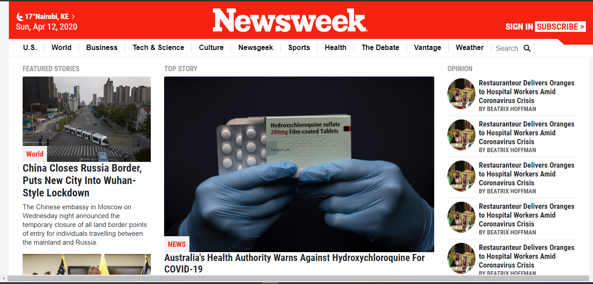
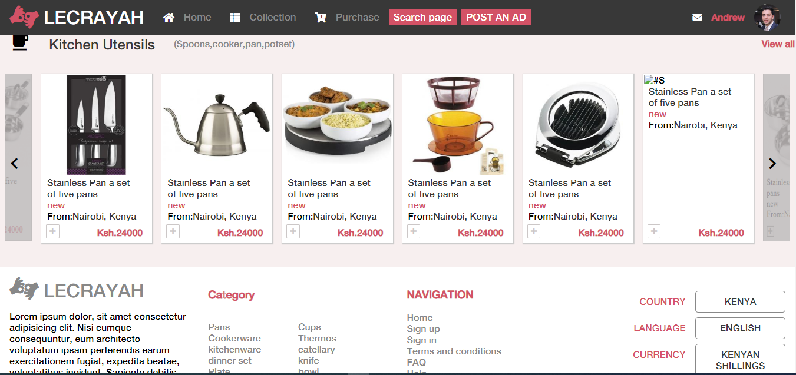

Projects

Favourite movie line
This is a ruby on rails project of a simple social media page for posting favourite movie quotes. Sass framework is used for for styling together with bootstrap. It captures basic functionalities of social site.
- Ruby on Rails
- HTML5
- CSS3
- Sass
- Bootstrap
Web scraper
This is a simple ruby project for scrapping data out of websites . Gem used is nokogiri.
- Ruby
- RSpec
- Nokogiri
Event brite clone
This is a ruby on rails project clone of common eventbrite functionalities. Users can create an invite users to attend the event.
- Ruby on Rails
- HTML5
- Sass
- RSpec
- Capybara

Newsweek website clone
This is a newsweek website clone project with all the interface of the original site.
- HTML5
- CSS3
- Bootstrap
- Javascript
